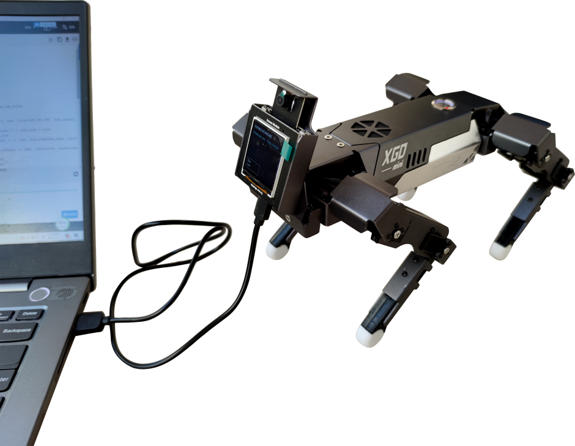
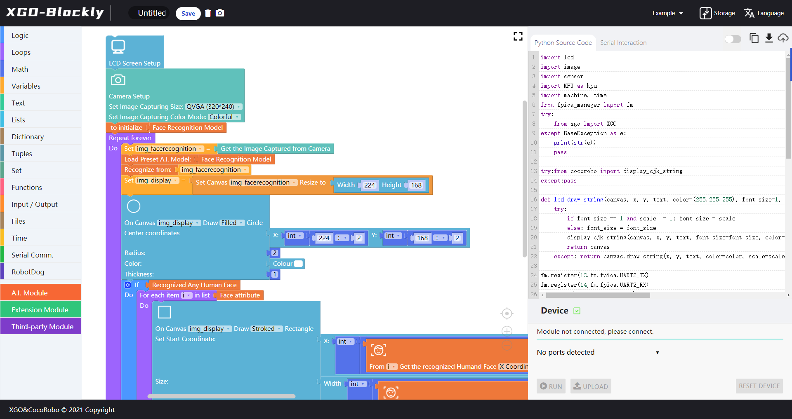
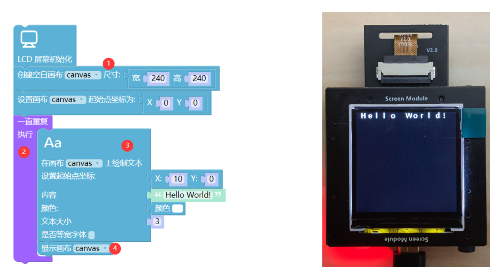
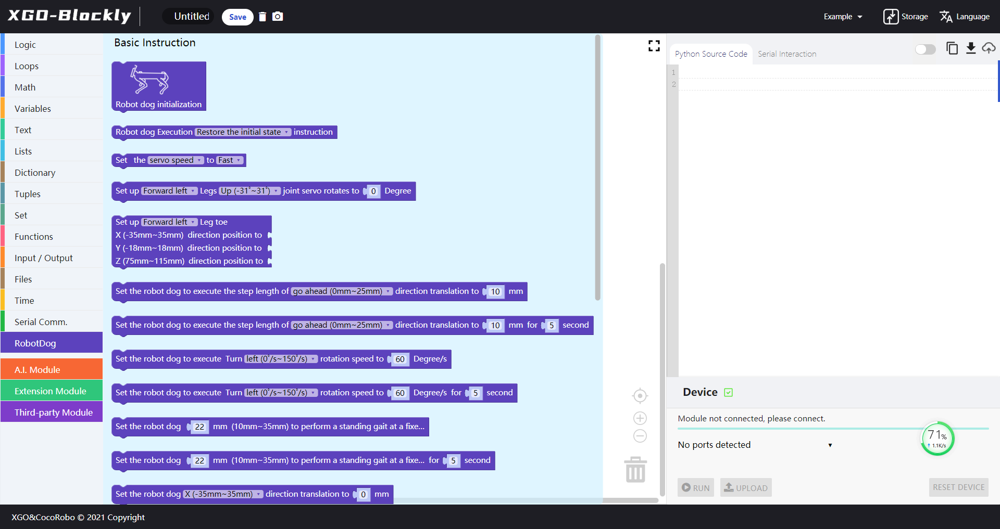
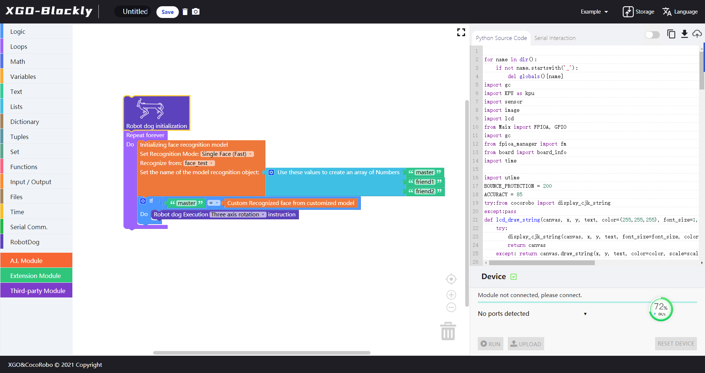

Introduction to XGOEdu
XGOEdu is a visual building block programming platform developed for the XGO K210 module. Users can write programs in a graphical way, and can also directly read or write Python programs. After the program is written, it can be executed online or uploaded to the hardware module. With this platform, users can empower their projects with AI without connecting hardware to the Internet. On the basis of providing entry-level Python syntax (logic, looping, mathematical operations, variables, word processing, lists, dictionaries, tuples, sets, functions, file operations, time), the platform also provides module programming & related Different types of functions, such as: serial input and output, 10 input and output, button/LED light control, microphone data acquisition, camera control, audio and video processing, use of models (including face recognition, face recognition, Object Recognition, Object Classifier, Handwritten Digit Recognition). Users can also train models based on TinyYOLO or MobileNET by themselves. After format conversion through our platform, they can be programmed through the programming platform and run directly on the AI module of XGO.
XGOEdu download
- Visual programming platform for XGO-Mini k210 download.
Connect the robot dog to the computer
- Lay the robot dog on the desktop, keep the battery fully charged, press the power button, insert a random Android data cable into the bottom of the AI module, and insert another into the computer USB port, as shown in the figure below. 
Program the robot dog with XGOEdu
- After installing XGOEdu, double-click the XGOEdu button to start the programming interface to program the robot dog , the XGOEdu programming interface is divided into 6 areas:
- Document access area: program project name, save (save as .xml file), delete all building blocks and one-click screenshots of all building blocks
- Auxiliary area: sample loading, project file import and export, language setting
- Building block command area: In addition to the basic building blocks (from "logic" to "serial communication"), there are different extended building blocks in different modes.
- Block programming area: Drag blocks into this area for programming.
- Python programming area: When the user drags the building block into the building block programming area, the corresponding Python source code will be generated here, allowing users to edit, copy, download and upload the code, and download the python document with the suffix .py format.
- Upload area: Users can choose to use online debugging or download mode.
The main page of XGOEdu is shown in the figure below. For details, please refer to the course PPT. 
Programming experience 1: Display the Hello World in the screen module!
First, turn on the XGO-Blockly. Then connect the module and the computer with the data cable to check whether the upload area shows the green box + pair sign, and the serial port display with the COM + number. After the two items are guaranteed, you can start programming. Click the following instructions in the block instruction area and drag them to the block programming area: (1) Extension module | Screen: "screen initialization", "create a blank canvas", "set the canvas coordinates" (2) Loop: Repeat Always (3) Extension module | Screen: Screen Text and enter Hello World!” (4) Extension Module | Screen: Show Canvas (Text Size can be changed by modifying the number; color optional, select white here) 
Programming experience 2: XGO mini custom face recognition
First, turn on the XGO-Blockly. Then connect the module and the computer with the data cable to check whether the upload area shows the green box + pair sign, and the serial port display with the COM + number. After the two items are guaranteed, you can start programming. Click the following instructions in the block instruction area and drag them to the block programming area: (1) Machine dog: "Machine dog initialization"  (2) Loop: Repeat Always (3) Artificial intelligence | AI model: experimental function "custom initialization face recognition model" (4) Logic: "If" "=" (5) Text: Fill in Name1 (6) Artificial intelligence | AI model: the experimental function "identified the object of the face model" (7) Machine dog: "Machine dog execute instruction" selection action 